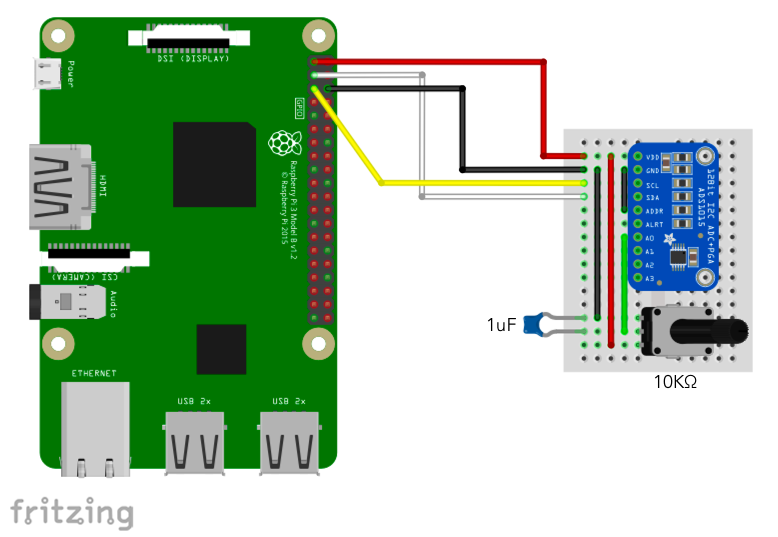

ADS1015 12 ビット AD コンバータ
概要
I2C 接続の ADC（アナログ・デジタルコンバータ）経由で可変抵抗器の値を表示します。
使用パーツ
- ADS1015 搭載 12BitADC 4CH 可変ゲインアンプ付き x 1 製品パッケージに付属するピンヘッダのハンダづけが必要です。
- 10kΩ B カーブ 可変抵抗器 x 1 ブレッドボードに直接刺せるタイプのものが必要です。例えばこれ
- 1uF コンデンサ x 1
- ジャンパー（オス・メス）ケーブル x 4
- ジャンパー（オス・オス）ケーブル x 4
- ブレッドボード x 1
配線図

サンプルコード (main.js)
const { requestI2CAccess } = require('node-web-i2c');
const ADS1015 = require('@chirimen/ads1015');
const { promisify } = require('util');
const sleep = promisify(setTimeout);
main();
async function main() {
var i2cAccess = await requestI2CAccess();
var port = i2cAccess.ports.get(1);
var ads1015 = new ADS1015(port, 0x48);
await ads1015.init();
for (;;) {
try {
var value = await ads1015.read(0);
console.log('value:', value);
} catch (error) {
console.error('error: code:' + error.code + ' message:' + error.message);
}
await sleep(100);
}
}